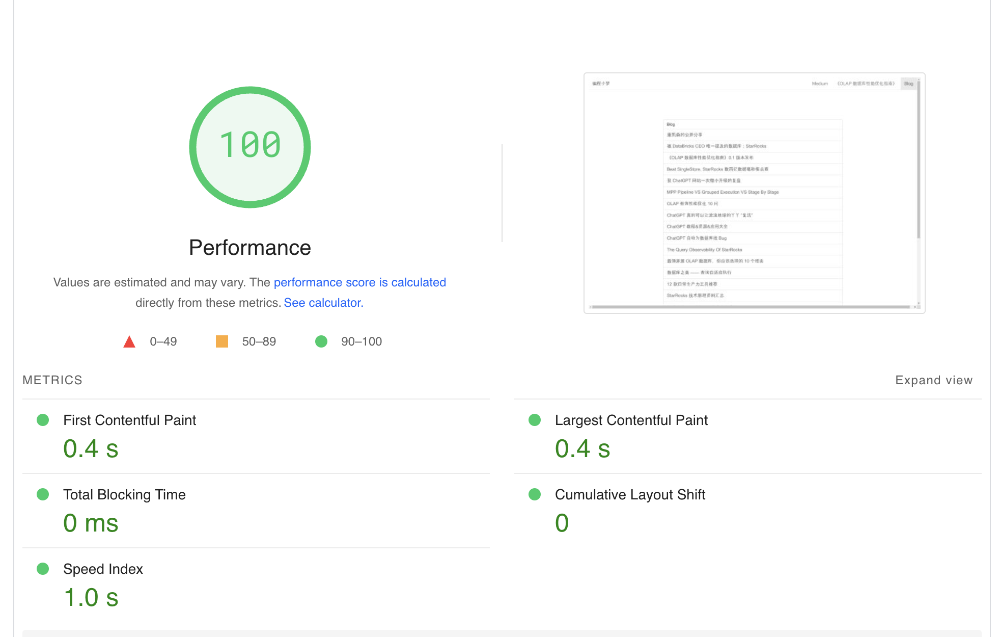
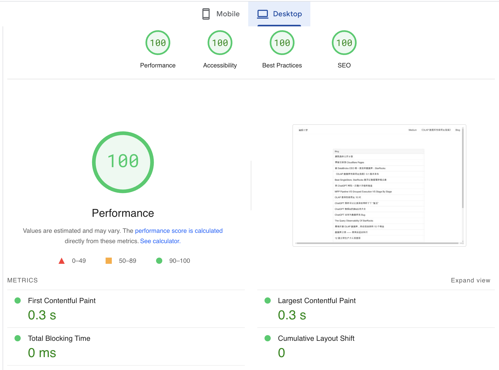

作者: 康凯森
日期: 2025-01-11
分类: 个人
编程小梦的博客是部署在阿里云的EC2机器上的，但是这次续费时因为我的机型太老，直接不让续费了。我的博客是大学时候部署了，也有十多年了。 正在最近在使用 Cloudflare pages，索性就决定直接迁移到 Cloudflare pages, 迁移过程比我预想的简单，也解决了之前部署在AWS EC2的好几个痛点。
/public 就可以在 public 下添加 _headers 文件：
/*
Cache-Control: public, max-age=2592000
操作比较简单，基本上按照提示走就可以，核心是同步 DNS 记录，然后在阿里云修改域名的DNS 服务器为Cloudflare 的DNS 服务器。
Cloudflare 自动扫描的DNS 记录可能不全，大家需要check一下，漏掉的需要手动添加。
在 Cloudflare 的规则中创建一个 从 WWW 重定向到根的重定向规则就可以：
之前的 HTPPS 证书 是基于 certbot 生成的，每3个月得刷新一次，十分麻烦。 Couldflare 自带免费 HTPPS 证书。
Cloudflare 对于静态资源也有CDN的全球加速，可以进一步提升网站性能。大家可以看到，更新的编程小梦博客在全球访问都是几百毫秒的延迟。

Github 自动部署 是现在开发过程的标配了，之前我每次更新博客到Github后，需要手动同步一次代码，比较古老。 现在 Github push 后Couldflare Pages 会自动部署。
Couldflare Pages 几乎是免费的，可以剩下一年几百多的阿里云的EC2 费用。
博客迁移完成，准备写篇博客，简单记录下时，遇到了这个报错：
/Users/kangkaisen/.nvm/versions/node/v18.17.0/bin/node /Users/kangkaisen/mygit/blog/app.js
fs.js:43
} = primordials;
^
ReferenceError: primordials is not defined
at fs.js:43:5
at req_ (/Users/kangkaisen/mygit/blog/node_modules/natives/index.js:143:24)
at Object.req [as require] (/Users/kangkaisen/mygit/blog/node_modules/natives/index.js:55:10)
at Object.<anonymous> (/Users/kangkaisen/mygit/blog/node_modules/graceful-fs/fs.js:1:37)
at Module._compile (node:internal/modules/cjs/loader:1256:14)
at Module._extensions..js (node:internal/modules/cjs/loader:1310:10)
at Module.load (node:internal/modules/cjs/loader:1119:32)
at Module._load (node:internal/modules/cjs/loader:960:12)
at Module.require (node:internal/modules/cjs/loader:1143:19)
at require (node:internal/modules/cjs/helpers:110:18)
Node.js v18.17.0
Process finished with exit code 1
核心原因是我15年写代码时用的依赖库marked-toc 太老了，这个库也10年没更新了。依赖版本更新了几次没解决后，我就决定直接换掉这个库。 然后用AI 写代码实现了生成toc的功能，换掉了这个库，AI 生成的代码可以参考 AI generateToc code
AI 对于这种基础的代码，基本上1，2次就可以生成的差不多。但是要做到100%正确，就需要你给出很明确的输入，输出示例，否则对于算法相对复杂，且自定义的代码，AI 都是会百分之八九十正确，总差那么一丢丢。
AI Coding 目前很火热，的确可以大幅提升我们的生产力，但是在一次生成代码的成功率上还是需要提升。
其实今天踩坑的过程，让我再一次意识到保持我们工作，开发环境稳定，一致的重要性。 如果我们的工作环境，开发环境 经常变化，我们就会花费精力折腾各种依赖，环境的问题，影响我们的效率。 从这一点讲：云端的开发环境也是有发展前景，它可以保证我们无论身在何处，采用什么设备，都可以获取一致的开发环境，唯一的问题可能就是网络环境是否稳定。

今天也顺手把博客 pagespeed 的4项评分都优化到了100.
源码在这： 编程小梦博客源码 ， 感兴趣也可以直接使用。
现在AGI的能力很强大了，AI写作已经十分成熟，所以下一个流行的博客框架必然是 AI Native 的。 应该具备以下标准功能：